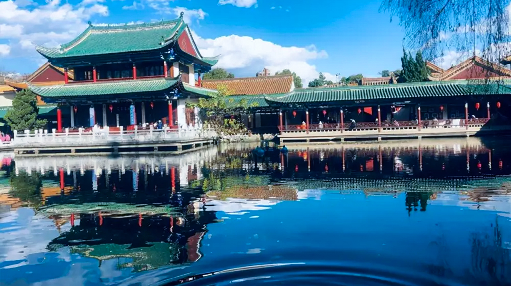

云南大学
该公园由于垂柳和碧水构成其主要特色的缘故，便在本世纪初正式定名为翠湖。它以“翠堤春晓”而闻名四方，人们称之为“镶嵌在昆明城里的一颗绿宝石”。
翠湖位于昆明市五华山西麓，占地面积352亩。湖东北有“九泉所出，汇而成池”，故又名“九龙池”，是一年四季都可游玩之地。堤畔遍植垂柳，柳枝拂面，湖内多种荷花，藕花飘香，旧有“十亩荷花鱼世界，半城杨柳抚楼台”之联，被誉为“城中碧玉”。有亭、台、回廊、曲桥等建筑，其建筑精致玲珑，亭阁均有匾对，歌咏园中的景观。
相比于夏天的翠湖，冬天的翠湖更别有一般感受。翠湖总是熙来攘往，冬日的暖阳洒下来，绿瓦白墙和金黄的杨柳镶嵌成一幅美画。海鸥一群群飞过，湖水碧绿、林木葱葱，美得像一幅画卷，特别适合找个椅子坐下，看这美丽的景色，晒晒冬日暖阳。
这个冬日，如果你心情烦闷就来翠湖公园发呆打卡吧。
云南大学地球科学学院@2021~2022